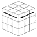
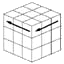

５ｘ５の解法
// 5x5における中央９パーツを固めて、３ｘ３のセンターキューブとみなす。
// なお、キューブ番号は、「拡張機能」の文字面をWクリックすれば表示できる。
//
//1)６色面を順番に実行する
//（上面の中央に「く」の字を描き、その下端と真ん中の空間に指定色のパーツを上げる）
// 横方向をYで４面廻す
// 正面をFで最大8回廻す
// 反映面の9,19に指定色colorを優先で置く
// ・正面の69にcolorが来れば、
// 上面へのお迎えを" r U r'"で実施し、9,19の輪も戻る(正面のcolorが増える)
// 底面をDで最大8回廻す
// 反映面の9,19に指定色colorを優先で置く
// ・底面の144にcolorが来れば、
// 上面へのお迎えを" r2 U r'2"で実施し、9,19の輪も戻る(底面のcolorが増える)
// 正面をFで最大４回廻す
// 反映面の14に指定とは別の色を置く
// ・正面の64にcolorが来れば、
// 上面へのお迎えを" r U Mc' U' r' U Mc"で実施し、14の輪も戻る
// 底面をDで最大４回廻す
// 反映面の14に指定とは別の色を置く
// ・底面の139にcolorが来れば、
// 上面へのお迎えを" r2 U Mc' U' r'2 U Mc"で実施し、14の輪も戻る
// １面全終了なら、次の面へYで回転させる
//2)エッジ左右寄せ：各面の処理を不揃い発見で進める
// 正面で左スロットに対し次を行う
// ５６のエッジグループ３個中、２個揃っていれば、”Y”で回転
// 揃わなければ５６の色を探し２４にMove回転で持ってくる（２色反転を避ける）
// Move回転の結果、新たに２２に来た色を探して４に持ってくる（２色反転を避ける）
// ２２のエッジグループ３個中、２個揃っていれば、”Y”で回転
// Move回転の結果、新たに22に持ってきたキューブの色が66キューブの色であれば、
// U',R'で５６の対面に置き、正面で次のエッジクロス交換を使う。
// Mu',R,U,R'F,R',F',R,Mu
// 上面４に寄せたら、Mr',U,L',U',Mr,U で穴開き２ペアを２セット作りストックする
// 左スロットがすべて揃ったら、不揃いスロットを５６に移動して同様に処理する
// 終了したら、エッジ中央寄せに進む
//3)エッジ中央寄せ：各面の処理を不揃い発見で進める
// 正面で左スロットに対し次を行う
// ５６のエッジグループ３個中、３個揃っていれば、”Y”で回転
// 揃わなければ５６の色を探し２３にMove回転で持ってくる（２色反転を避ける）
// Move回転の結果、新たに22に来た色のキューブを探して３に持ってくる（２色反転に注意）
// 上面３に寄せたら、Mc,U,L',U',Mc',U で３ペアを２セット作りストックする
// ２２のエッジグループが３個共に揃っていれば、”Y”で回転
// Moveで持ってくるキューブ自体が61エッジにあれば、
// L,Dで56・66を72・74に移し、上面のPLLパリティ補正後上下揃えば、”Y”で回転
// 3ペアが揃わないエッジグループが２セットだけになったら、PLLパリティ補正を実施し
// ２組揃ってしまえば、次段階の疑似３ｘ３処理に進む。("l2 U2 F2 l2 F2 U2 l2")
// 揃わないエッジグループが一つだけなってしまったら、
// 上面前後で次の前グループ内1反転(OLLパリティ補正と同じ)を実施する。
// "r2 B2 U2 l U2 r' U2 r U2 F2 r F2 l' B2 r2"
// 右２奥２☆、左下☆右下☆右上☆、前２右上,前２左上、奥２右２（左右はW輪,☆は上２）
// ミッツオツウツ、ヒザウツミサウツミウウッツ、マツミウ,マツヒウ、オツミッツ
//4)全エッジグループが１２セット揃ったら、次段階の疑似３ｘ３処理に進む


 →
→  →
→  →
→ 

 を作る。 参考：
を作る。 参考： や横棒(-)
や横棒(-) なら
なら ■(右下)の場合は、尻尾を手前に、右上親指、
■(右下)の場合は、尻尾を手前に、右上親指、 ■(右上)の場合も、黄色横開きを奥に、右上親指、
■(右上)の場合も、黄色横開きを奥に、右上親指、 の場合は、左右肩光では右肩、光横開き(左上)■
の場合は、左右肩光では右肩、光横開き(左上)■


 →
→  →
→ 

 →
→  →
→  →
→  →
→ 


 →
→  → 
→
→ 
→  →
→
→
→  →
→  →
→